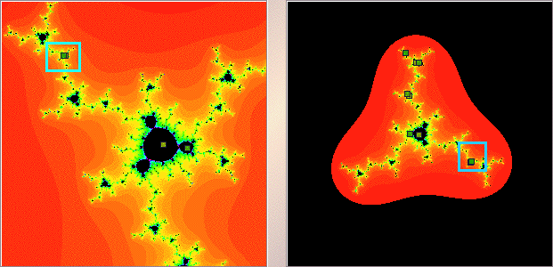

|  |
| The left window shows the magnification of the upper central part of the cycle in the right window. |
| The apparent 2 points now are well-separated, and the apparent single point maybe 2 points. |
| Click the left window blue box for a magnification of that region; click the right window blue box for a magnification of that region. |
Return to Samples.